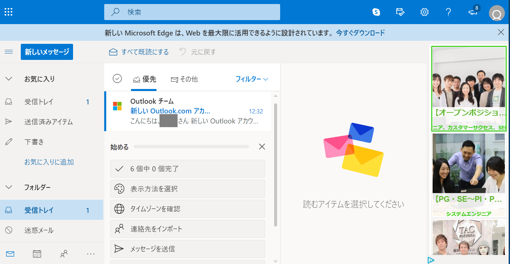
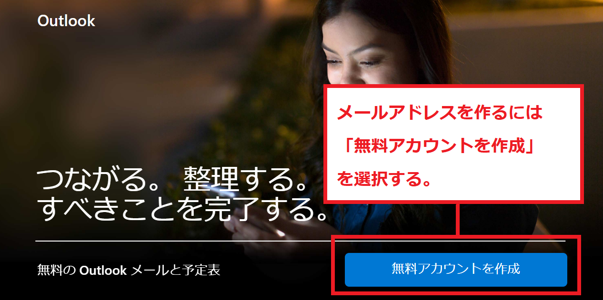
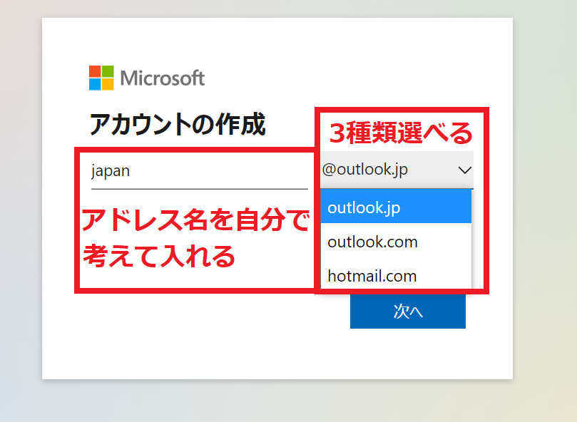
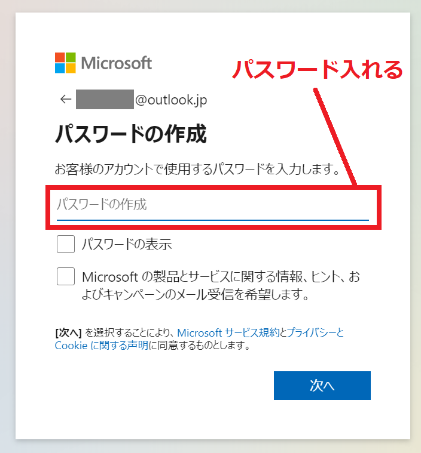
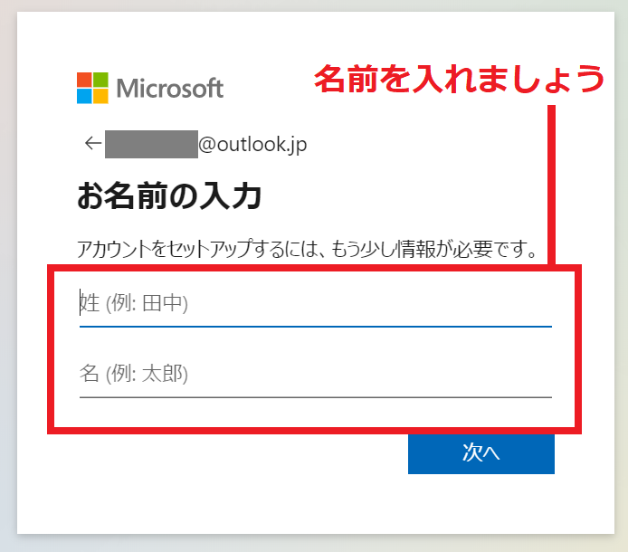
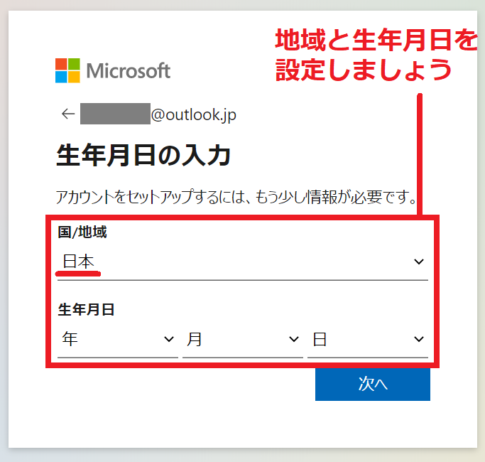
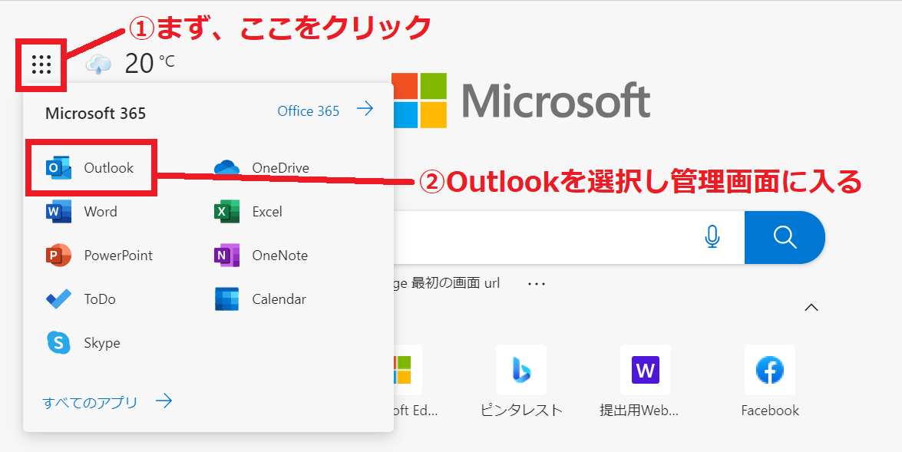

このページではOutlookメールの作り方と特徴や使用方法について解説をしています。
「Outlookメール」とはMicrosoftが提供するフリーメールサービスになります。 誰でも簡単に無料でメールアドレスを作ることが出来ます。
メールアドレスを作る時は「～@outlook.jp」など3種類のドメインからどれか1つを選ぶことが出来ます。
また、Outlookメールを作るだけで無料バージョンのWordやExcelなど10種類近いWebサービスも無料で使えるようになります。
Outlookと聞くとWindowsパソコンに標準搭載されているメールソフトのOutLookをイメージする方も多いかもしれません。
しかし、フリーメールである「Outlookメール」とWindowsパソコンに搭載されているメーラーの「Outlook」は 名前はほぼ一緒ながら異なるサービスになります。
PC版の「Outlook」はソフトがインストールされている1台のパソコンだけで使用するものになります。
一方でフリーメールである「Outlookメール」はネットに繋がっているパソコンやスマートフォンなら、どこでもメールの送受信ができます。 ソフトをインストールするという概念ではなく、Microsoftが管理するサーバーに都度ログインしてサービスを利用します。
この、どこでもメールができる機能を「Webメール」と呼びます。
Webブラウザでホームページを開いたり、スマートフォンのアプリを起動させて「ID」「パスワード」を入力することで管理画面にログインすることが出来ます。
単純にネット環境につながってるデバイスであれば、IDパスワードを入れて「さっとメールが出来る」ということになります。
PC版の画面

では実際に、Outookメールを作成してみましょう。
Outlookメールを作るため、まず「Outlookメール」の専用ページに入りましょう。この専用ページからOutlookメールのメールアドレスを作成できます。
次のURLをクリックしてください。

１．メールアドレスを入力する
まず、どのようなメールアドレスにするか決めましょう。
Outlookメールでは「outlook.jp」「outlook.com」「hotmail.com」とアドレスが3種類選べるようになっています。どれか1種類を選択してください。
どのアドレスにするべきか、迷った際は「outlook.jp」を選ぶと良いでしょう。

２．パスワードを入力する
続いてパスワードを入力しましょう。パスワードはメール作成後でも変更ができます。

３．氏名を入力する
自分の氏名を入力しましょう。ここで登録した氏名もメール作成後に変更することが出来ます。

入力をしたら「次へ」を選択しましょう。
４．地域と生年月日を設定する
地域（日本）と自分の生年月日を入れてから「次へ」を選択してください。生年月日も後から変更できます。

次の画面で、本人認証をするとメール作成が完了となります。 これだけでOutlookメールを作ることが出来ます。
ユーザー名（メールアドレス）とパスワードは忘れないよう、メモをするなりして管理しておきましょう。
５．Outlookメールの作成が完了
作成が完了すると自動的にOutlookメールの画面に遷移します。パソコンとスマホに広告が一部に入りますが、無料でサービスを活用することが出来ます。
Outlookメールの管理画面に入る3つの方法を紹介します。
スマートフォンの場合は専用アプリがあります。アプリをインストールすることでより簡単に管理画面に入れるため、 スマートフォンの場合は専用アプリをインストールしましょう。
OutlookのWebサイトをお気に入り登録することでブラウザを開いてログインすることが出来ます。 上記のリンクからOutlookメールの専用サイトに入れます。
最後に紹介するのがMicrosoftが提供するブラウザ「Edge」のホームページから入る方法になります。
「Edge」のスタートページにはURLがないため、スマホであればアプリを入れて下さい。パソコンの場合は「Edge」をダウンロードして起動することで 自動的にスタートページから始まります。
ページを開くとルービックキューブのようなメニューアイコンがあります。このアイコンをクリックすることでOutlookメールの管理画面に入れます。

実はOutlookメールを作ると、自動的にそのメールアカウントが「Microsoftアカウント」としても登録されます。
少しわかりづらい概念になりますが、「Outlookメールのアカウント」＝「Microsoftアカウント」となります。
「Outlookのメールアカウントだけ作りたい、Microsftアカウントは要らない」ということが出来ません。Outlookメールを作ることは、そのままMicrosoftアカウントを作ることになります。
そのため、アウトルックメールのアドレスを作ったら、そのIDとパスワードでMicrosoftアカウントの管理画面にも入ることが出来ます。
Microsoftアカウントは、Microsoftが提供するWebサービスを無料で利用でき「一括管理」するためのアカウントになります
このWebサービスにOutlookメールも含まれます。
その他にもWordやExcel、オンラインストレージなど（機能は限定されている）、本来無料では利用できないソフトが利用できる大変お得なサービスになっています。
Outlookメール（＝Microsoftアカウント）を作るだけで、このサービスが受けられます。
Outlookメールにはパソコン用とスマホ用の画面に広告が入ります。 Gmailよりも広告は大きく配置されています。
有償プランに乗り換えることで広告表示は出なくなります。
Outlook以外にもフリーメールサービスは幾つかあります。
それぞれのアカウント作成するための方法を以下で紹介しています。
| サービス | アドレス | 容量 | 広告表示 |
|---|---|---|---|
| Gmail | 「***@gmail.com」 | 15GB | あり（削除可） |
| icloudメール | 「***@icloud.com」 | 5GB | なし |
| Yahooメール | 「***@yahoo.co.jp」 | 10GB | あり |
また、会社用にメールアドレスを作ろうとしている方に、法人用アドレスを作るにあたって「先に知っておきたい知識」について、要点をまとめている解説ページを紹介します。

demiglaze
Web制作を始めて約19年になります（HTML/css、Photoshop、Webマーケティング）。2005年から当サイトの運営を開始。 これまでに300個以上のドメインを取得、10社を超えるレンタルサーバーを利用してきました。